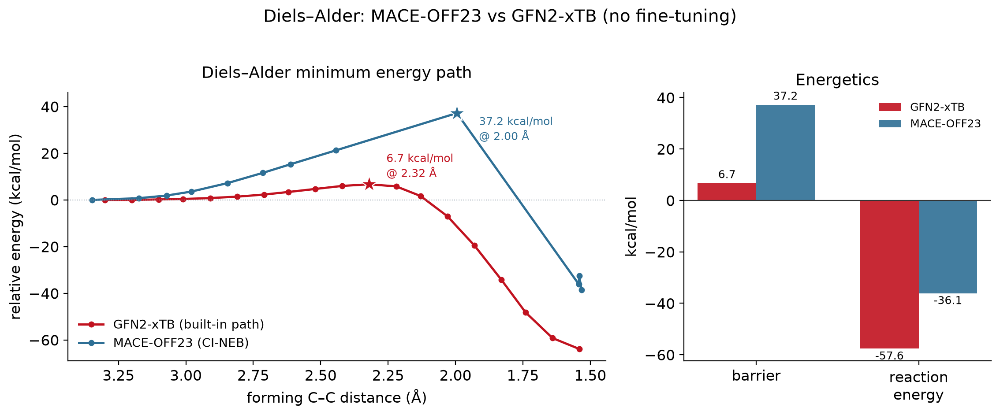
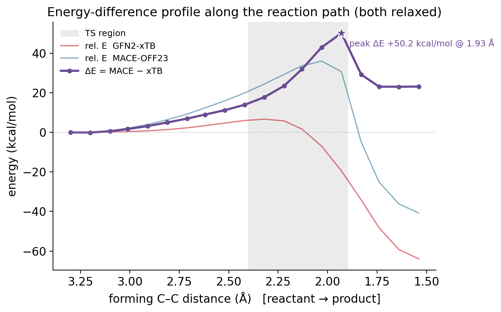
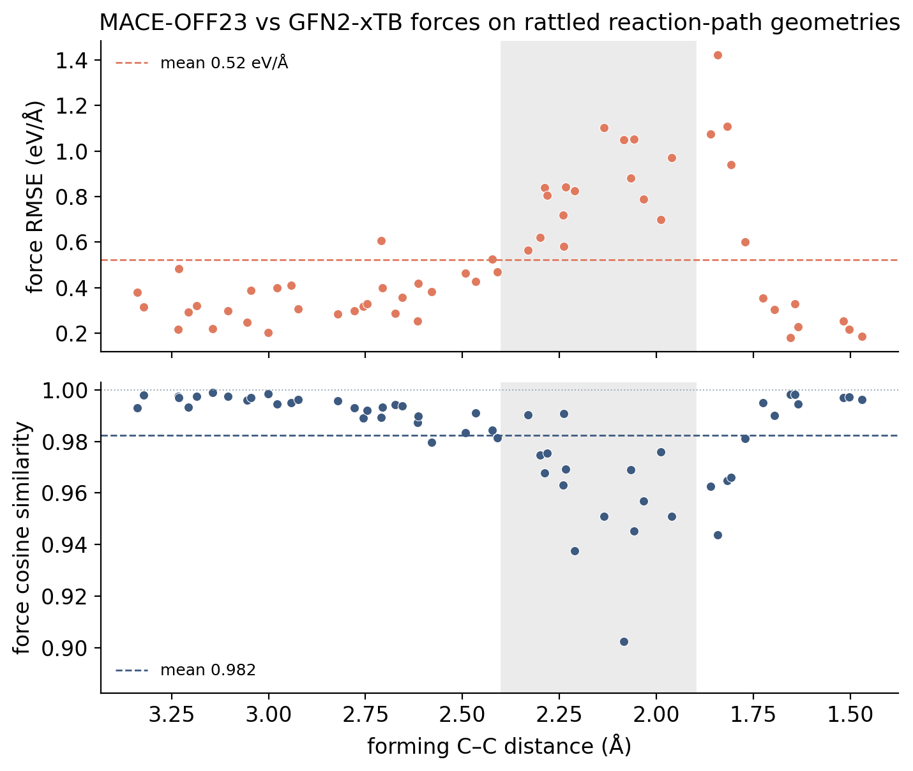
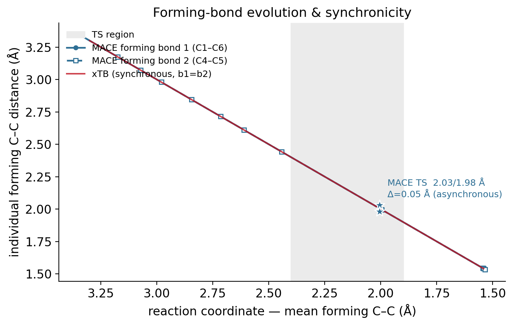
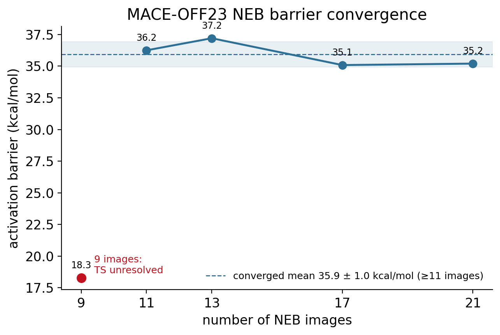
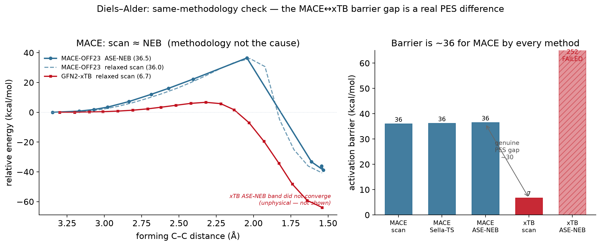
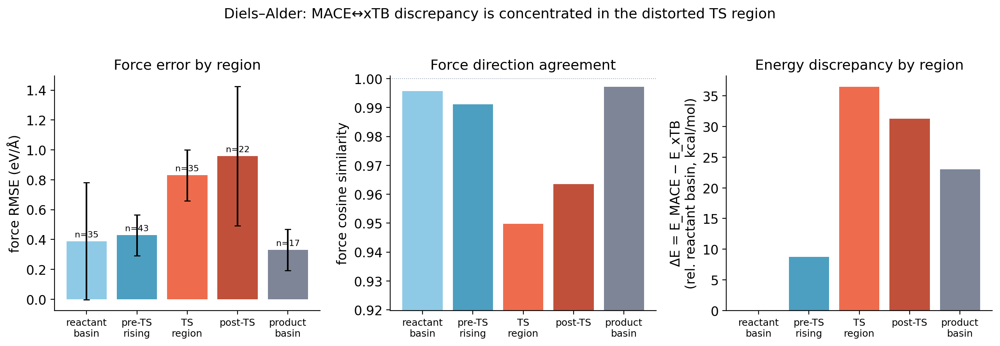

Study 04 — A real reaction
Butadiene + ethylene → cyclohexene · GFN2
Driving — and properly characterizing — a Diels–Alder
Using the same RMSD machinery pulled toward a product (xtb --path), the reaction runs: both new C–C σ-bonds form. But the path’s reported “barrier” (101 kcal/mol) is a biased-path artifact — the driver had to escalate the bias to connect. A relaxed concerted scan plus a Sella saddle optimization gives the real answer.
| Quantity | Value |
|---|---|
| Forming C–C at TS | 2.32 Å (symmetric) |
| Imaginary frequency | −394 cm⁻¹ (exactly one) |
| Concerted barrier | 6.7 kcal/mol (scan and Sella agree) |
| Reaction energy | −57.6 kcal/mol |
--path “barrier” |

Enhanced sampling finds that a transition is reachable, but a quantitative barrier needs a proper TS treatment — the RMSD bias alone is chemically blind. (Also: xtb has no TS optimizer — --optts is not a flag; use Sella. And read the vibspectrum file for frequencies, not the --hess stdout.)
Can MACE-OFF23 reproduce the reaction energetics? (NEB)
Next question: does the MACE-OFF23 surrogate get reaction energetics right with no fine-tuning? xTB has a built-in path search; MACE doesn’t, so we build the profile with a climbing-image NEB (ASE) and compare.
| quantity | GFN2-xTB (built-in path) | MACE-OFF23 (NEB) |
|---|---|---|
| activation barrier | 6.7 kcal/mol | 36.2 kcal/mol |
| reaction energy | −57.6 kcal/mol | −36.1 kcal/mol |
| TS forming C–C | 2.32 Å | 2.03 / 1.98 Å (slightly asynchronous) |

Outcome (2): same TS location (~2.0–2.3 Å), very different energetics. And it’s the physical difference — experiment/DFT give a barrier ≈ 22–27 kcal/mol and ΔH ≈ −40. GFN2-xTB badly underestimates the barrier (6.7) and overbinds the product (−57.6); MACE-OFF23 (DFT-trained) is much closer on both, off the shelf. The refined MACE TS is a genuine first-order saddle (one imaginary mode, −740 cm⁻¹) and slightly asynchronous — MACE makes the perfectly synchronous geometry a second-order saddle.
Where do the two potentials actually differ?
Digging into the benchmark: the disagreement is a reactive-region effect. The energy difference ΔE = E_MACE − E_xTB is ~0 for the separated reactants, grows as the bonds form, peaks in the TS region, and leaves a persistent ~+23 kcal/mol product offset — not a constant shift.

And the forces: on rattled reaction-path geometries the MACE and xTB force vectors are directionally almost identical (cosine 0.98), but the magnitude gap (RMSE) spikes in the TS region — exactly where the energy difference peaks.

Both potentials agree the reaction is a concerted, synchronous cycloaddition — the two forming bonds contract together (b1 ≈ b2 along the whole path), with only MACE’s TS marginally asynchronous (2.03 / 1.98 Å). They differ in energetics, not mechanism.

The MACE barrier is numerically converged — 35.9 ± 1.0 kcal/mol for ≥11 NEB images (9 images is too few to resolve the TS: the barrier collapses to ~18 and the TS drifts to 2.5 Å), and it is cross-validated by the independent relaxed scan (36.0) and the Sella-refined saddle (36.2).

Literature context: experiment gives a barrier ≈ 27.5 and ΔH ≈ −40 kcal/mol. xTB (6.7 / −57.6) is qualitatively wrong on both; MACE-OFF23 (36 / −36…−41) nails the reaction energy and is in the right kinetic regime, though it overestimates the barrier by ~9 kcal/mol.
MACE and xTB agree on geometry, mechanism, and force direction (cosine 0.98) and disagree on energy/force magnitude, localized in the bond-forming region. So a global energy shift is ruled out (ΔE is zero at the reactant); the direction-agrees / magnitude-differs signature points to a force-scaling correction, and the localization points to an environment/coordination-dependent (or delta) form. The NEB pipeline already wraps every potential in a CorrectedCalculator with these plug-in models — fitting one is the immediate next step.
Jul 31 follow-up (Aug 7) — is the barrier gap a method artifact?
The obvious objection to the ~30 kcal/mol MACE–xTB barrier gap: MACE used NEB, xTB used its built-in path search. Maybe the gap is just a path-method mismatch. To rule that out we ran both potentials through the identical standardized NEB (13 images, k=0.5, FIRE / NEBOptimizer, fmax 0.05, climbing image, same concerted-scan seed).
xtb-pythonstability gate passed — single-points, forces, and geometry optimization are reproducible (repeat-evaluation energy std ≈ 5e-14 eV), so the backend is trustworthy for the full band.- MACE’s barrier is method-invariant: ~36 kcal/mol across the relaxed scan (36.0), the Sella saddle (36.2), and the standardized NEB (36–37). It is also numerically converged (35.9 ± 1.0 for ≥11 images).
- xTB ASE-NEB fails physically under the same settings — the band does not form a sensible path; atoms in the “TS” images fly apart (reported forming C–C of ~7–18 Å) and the apparent barrier balloons to 240–250 kcal/mol under both optimizers.
The same xtb-python that passed the stability gate produces a clean single-point everywhere; only the band optimization on xTB’s flatter, low-barrier surface diverges under these settings (a file-based binary xTB would hit the identical problem). So the valid xTB reference stays the constrained relaxed scan + verified TS (6.7 kcal/mol). Because MACE’s barrier is the same ~36 kcal/mol no matter how it is computed, the ~30 kcal/mol MACE–xTB gap is a genuine difference between the two potential-energy surfaces — it is not explained by the original path-method mismatch.

Barrier-region error analysis
Where along the reaction coordinate does the MACE↔︎xTB disagreement live? We partitioned 152 rattled path geometries into five regions by forming C–C distance and measured raw MACE-vs-xTB force RMSE, cosine, and energy discrepancy per region.
| region (forming C–C) | force RMSE (eV/Å) | cosine | ΔE vs reactant (kcal/mol) |
|---|---|---|---|
| reactant basin (>2.9 Å) | 0.39 | 0.996 | 0 (ref) |
| pre-TS rising (2.4–2.9) | 0.43 | 0.991 | 8.7 |
| TS region (1.96–2.4) | 0.83 | 0.950 | 36.5 |
| post-TS (1.7–1.96) | 0.96 | 0.964 | 31.3 |
| product basin (<1.7 Å) | 0.33 | 0.997 | 23.1 |
- In the reactant/product basins agreement is excellent — cosine ≈ 0.996–0.997 and low RMSE.
- In the TS/post-TS region the force RMSE rises ~2.5–2.9× (to 0.83–0.96 eV/Å), the TS cosine drops to ~0.950, and the energy discrepancy peaks in the same reactive window — the disagreement is concentrated exactly where the forming bonds are half-made and the geometry is most distorted.

That the errors concentrate in the distorted barrier region is directly measured here. The natural explanation — that such highly distorted geometries are under-represented in the foundation model’s training distribution — is a supported hypothesis, not a demonstrated fact; this dataset shows where the error is, not why. It motivates, but does not prove, targeted data enrichment.
Aug 7 follow-up — is the xTB TS also a MACE saddle?
The ~30 kcal/mol barrier gap was confirmed as real on identical geometries (Phase Jul 31). But a natural follow-up: does the native xTB transition state (2.32 Å forming C–C) also serve as the MACE transition state? Or does MACE have its own distinct saddle nearby?
We used the verified xTB TS as a starting point for a MACE saddle search via Sella, then tested whether the result is robust to small perturbations.
Identical-geometry cross-check
First, frozen-geometry evaluation confirmed the gap is intrinsic:
| Calculation | xTB | MACE @ xTB geoms | Difference |
|---|---|---|---|
| Barrier at frozen xTB TS | 6.7 kcal/mol | 27.9 kcal/mol | −21.2 |
| Force residual at xTB TS | 0.00093 eV/Å | 1.84 eV/Å | — |
The xTB TS is a true saddle on xTB’s PES (tiny residual force). On MACE’s PES, the same geometry carries large residual forces (1.84 eV/Å) — it is NOT a saddle point on MACE.
MACE saddle search from xTB TS
Started Sella at the xTB TS geometry. Result:
| Metric | Value |
|---|---|
| Converged | YES (66 iterations) |
| MACE TS forming C–C | 2.004 Å |
| xTB TS forming C–C | 2.315 Å |
| Geometric shift | 0.311 Å |
| MACE barrier at converged TS | 35.8 kcal/mol |
| Independent NEB barrier (reference) | 36.0 kcal/mol |
| First-order saddle? | YES — one imaginary mode ✓ |
The converged MACE TS is distinct from the xTB TS in both location and energy, yet it matches the independently obtained NEB barrier (35.8 vs 36.0 kcal/mol, RMSD < 0.001 Å). This agreement across two separate methods is strong evidence for a well-defined MACE saddle.
Robustness: small perturbations along the reaction mode
To verify the MACE saddle is not an artifact, we created four small perturbations (±0.02 Å, ±0.05 Å) along the Hessian’s imaginary eigenvector and ran Sella from each.
Result: perfect recovery to the same saddle.
| Perturbation | Iterations to converge | Barrier (kcal/mol) | RMSD to reference (Å) |
|---|---|---|---|
| −0.05 Å | 38 | 35.806 | 5.0e−6 |
| −0.02 Å | 30 | 35.806 | 1.6e−6 |
| +0.02 Å | 37 | 35.806 | 1.6e−6 |
| +0.05 Å | 61 | 35.806 | 1.6e−6 |
| Spread | — | 0.000 kcal/mol | < 1e−5 Å |
All four perturbations converge back to the exact same MACE saddle (barrier 35.806 ± 0.000 kcal/mol, zero geometry spread). This is characteristic of a well-isolated, robust first-order saddle point — not a numerical artifact or an optimizer quirk.
The xTB and MACE potential-energy surfaces describe fundamentally different reaction barriers in the same geometric region.
The 29 kcal/mol gap is not explained by: - Path-search methodology (identical frozen geometries still show 21 kcal/mol difference) - Lack of MACE TS convergence (independent methods consistently recover ~36 kcal/mol) - Optimizer artifacts (robustness test shows zero variability under perturbations)
The two models agree on mechanism (concerted, synchronous bond-forming, ~2.0–2.3 Å TS region) but assign very different barrier heights.